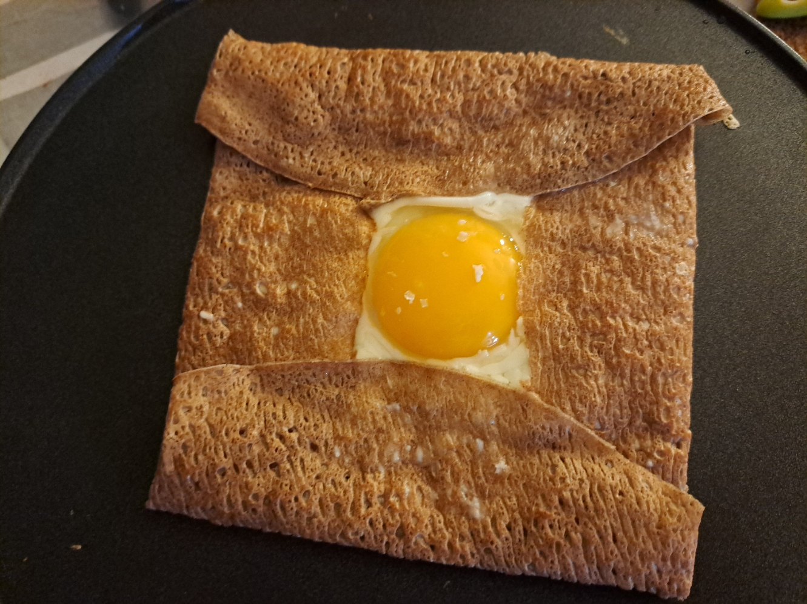

Galette Œuf-Fromage

Instructions
1
Prepare the Galette
Heat a large skillet or crêpe pan over medium heat. Add the butter and let it melt. Place the buckwheat galette flat on the pan.
2
Add the Egg
Crack the egg in the center of the galette. Let the white begin to set slightly while keeping the yolk intact. Season lightly with salt and pepper.
3
Add the Cheese
Sprinkle the grated cheese evenly around the egg, avoiding the yolk. Allow the cheese to melt while the egg cooks.
4
Fold and Serve
Fold the four edges of the galette inward to form a square, leaving the egg yolk visible in the center. Continue cooking until the cheese is fully melted and the galette edges are crisp. Serve immediately.